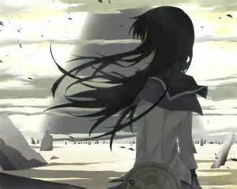

Akemi Homura (from wikipedia)
Akemi Homura(暁美 ほむら) is a character from the 2011 anime series Puella Magi Madoka Magica and its related media. As a magical girl, Homura has the ability to travel back in time, and uses this in the anime in an attempt to save the life of title character Madoka Kaname. Created by Akiyuki Shinbo and Gen Urobuchi, and designed by Ume Aoki, the character plays an important role in Madoka Magica media and merchandise.
Akemi Homura first appeared as a vision in one of Madoka’s nightmares. She transfers into her school as a mysterious teenage girl the day after the dream. After Madoka and her friend Sayaka come into contact with magical girl Mami Tomoe and extraterrestrial being Kyubey, Homura is revealed to be a rival magical girl with a deep hatred towards Kyubey. She is impeccably great at everything she does whether its academic or sport and she's also the most experienced magical girl.
Editted by:Anu